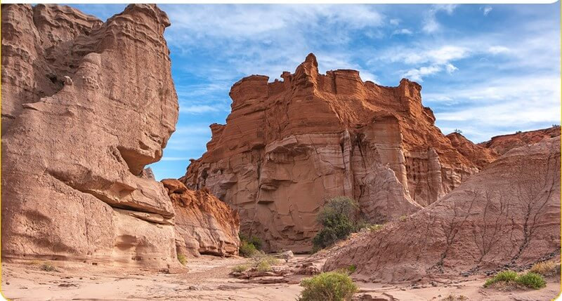
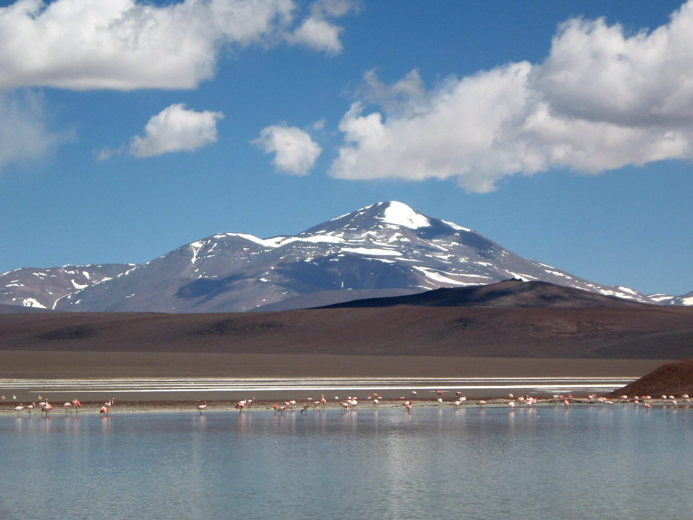
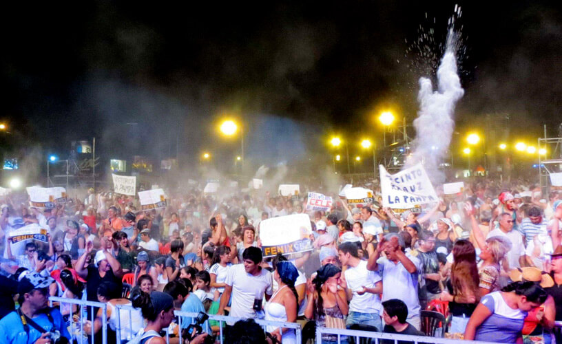

En esta página, te llevaremos a un emocionante viaje a través de algunos de los destinos turísticos más impresionantes y culturales que esta región tiene para ofrecer. ¡Explora la impresionante belleza geológica del Parque Nacional Talampaya, sumérgete en la mística de la Laguna Brava y embárcate en la exuberante celebración de la Fiesta de la Chaya!

En el Parque Nacional Talampaya, serás transportado/a a una época prehistórica. Este Patrimonio de la Humanidad, ubicado en la provincia de La Rioja, presenta un paisaje desértico único en el mundo. El majestuoso Cañón de Talampaya, con sus altas paredes rocosas esculpidas por el viento durante millones de años, es el corazón del parque. Aquí, podrás caminar entre imponentes formaciones rocosas y contemplar los restos fósiles de dinosaurios que habitaron esta tierra hace millones de años.
Sumérgete en la rica historia cultural de la región explorando la Ciudad Perdida, donde los petroglifos y pinturas rupestres narran la vida de las antiguas culturas que poblaron el área. Si eres un amante de la naturaleza, no te pierdas la oportunidad de avistar guanacos, cóndores andinos y una variedad de flora y fauna autóctona.

Adéntrate en los misteriosos paisajes de la Laguna Brava, una joya escondida en las alturas de la cordillera de los Andes. Situada en una altitud impresionante, esta laguna de origen glaciar se destaca por su sorprendente color azul intenso y sus aguas cristalinas. Acompañado/a por majestuosos picos montañosos y una serena paz, este lugar ofrece una experiencia de naturaleza en su estado más puro.
La Laguna Brava es también refugio de una importante población de flamencos rosados y otras aves migratorias, lo que la convierte en un paraíso para los amantes del avistamiento de aves. Si buscas desconectarte del bullicio de la ciudad y conectar con la majestuosidad de la naturaleza, la Laguna Brava te espera con los brazos abiertos.

La Rioja se enorgullece de su vibrante tradición cultural, y no hay mejor manera de experimentarla que sumergirse en la colorida y animada Fiesta de la Chaya. Celebrada durante los primeros días de febrero, esta fiesta marca el final del verano y da la bienvenida a la cosecha. La Chaya es una festividad que combina música, danza y rituales ancestrales.
El corazón de la fiesta late al ritmo del folklore, donde artistas locales y nacionales se reúnen para compartir su música y talento. Las calles se llenan de comparsas y desfiles de carrozas, mientras que la gente disfruta de deliciosas comidas tradicionales y bailes animados. La alegría y la energía de la Chaya te contagiarán, y pronto te encontrarás cantando y bailando al compás de la música.
En nuestra página web, hemos creado una sección especialmente dedicada para que puedas explorar y comparar los precios de los distintos viajes que ofrecemos. Nuestra herramienta de precios interactiva te brinda una visión clara y detallada de todas las opciones disponibles, para que puedas planificar tu aventura de manera precisa y acorde a tu presupuesto.